Home > Tutorials

Tutorial
Introduction
This article walks through the process of generating a number of standard shift definitions for mobile patrols.
|
Getting There:
[ N/A ]
|
Introduction
This article will walk you through the creation of client work schedules for the automatic generation of rosters. You should also refer to the SACL example for a more detailed walk through of steps and another take on this process. The backdrop to this roster requirement is a mobile patrol to work across some 20 parking locations in Adelaide. The two mobile patrols drive from parking station to parking station throughout the day, and the biker similarly other than the use of a bike.
The required shifts are 2 x mobile (cars) working 08.00-20.00 & 20.00 - 08.00, and a bike shift 10.00-19.00.
Top of Page
Step 1
First thing to understand in the context of this requirment is that PowerForce rosters to a single location at a time. Thefore to paint this roster in the context that the employees have to travel across 20+ locations, means that we'll have to take some poetic licence in this definition.
We will roster the employees to a location "City Parking", which will not represent a physical location but rather a logical one. The employees themselves know what's required, and the system will be none the wiser as it sees the employees rostered at a single location (for the purposes of this example).
Top of Page
Create Work Schedules
In PowerForce the term 'work schedules' refers to the coverage requested for a service.
The first item to be prepared for generating the work schedules is the role types that you wish to use for the purpose of this configuration.
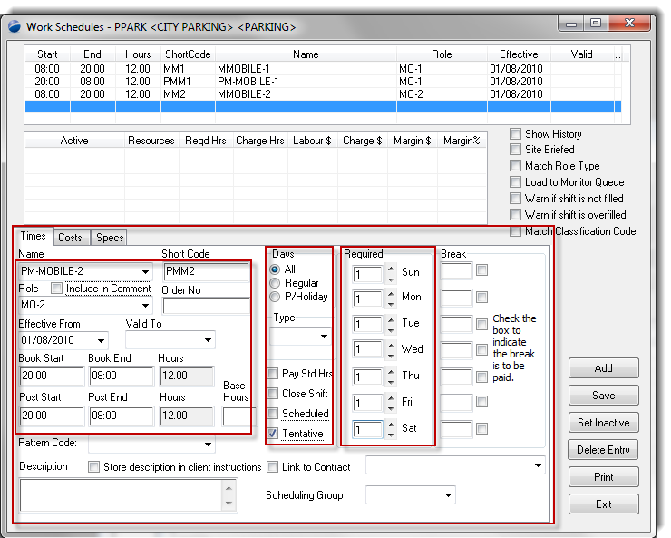
In this last configuaration above, we have:
- a shift called PM-MOBILE-2, abbreviated to PMM2 (for reports & scheduling workbenc).
- the shift has a role type of MO-2 (drop down will show you all the available roles that you have previously-defined). You could well use MO-1 if they're exactly the same role in terms of responsibility and charge out rate.
- the shift is effective 01/01/2010 - and has no end date (until you enter one - to finish this work schedule)
- the shift runs from 20.00 hours to 08.00 the next day
- the shift runs on "All" days (meaning 7 days / week). You can select "All" and only run it Mon-Fri ( this is just for categorisation)
- check the "tentative" flag
- and, we require 1 of these shifts for every day Sun - Sat.
- Press SAVE, to save this definition away.
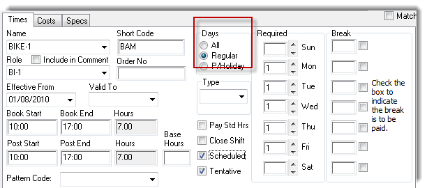
In the above example, we've selected a Days entry of Regular - and we'll expain this further when defining the standard schedule below.
So, after defining all of the work schedules, our completed configuration should approximate the image below.
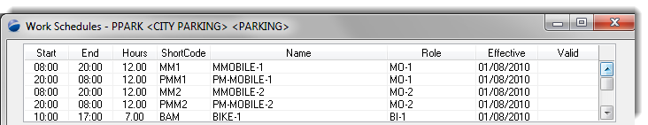
You'll notice a PRINT button at the bottom of the window, which display a report outlining the newly created work schedule for this site.
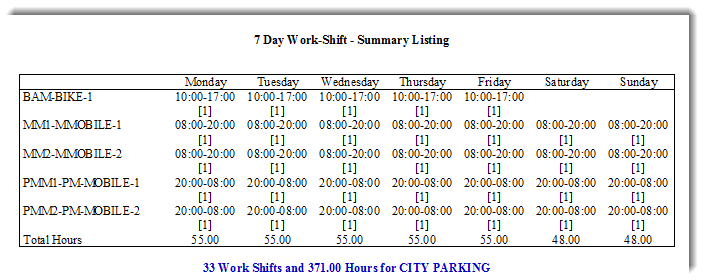
Top of Page
Standard Schedule Creation
Once the work schedule is complete, you may stop there if you do not wish to define a regular roster for your staff against this work schedule.
Let's assume we're going to have a mix of regular shifts as well as some adhoc.
Opening the Standard Schedule definition we see the "ALL" and "REGULAR" terms which directly correspond to our earlier note about the days of the week above. This is purely for clarity of display and categorisation of shifts (Mon-Fri, weekend & public holiday only).
The image below shows:
- the work schedules categorised against the "ALL" days selection on the work schedules.
- you can see the use of the MM1/Mobile-1 configuration entries directly off the work scheudles. One if the abbreviation and the other is the description of the Role.
- the Alloc column indicates that 84 hours are required in the week
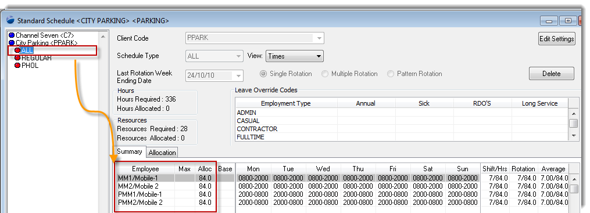
A quick look at the "REGULAR" day definition shows our Bike AM shift.
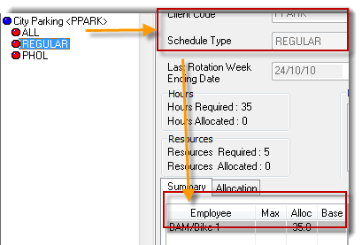
We'll work a combination of allocating some regular shifts to regular staff, and leaving a number of shifts to be filled through adhoc means on a per week basis.
Select an empty cell below the PMM2/Mobile 2 line, and double-click. This will bring you a new form to which you want to select "Add Employee". Then go through the process of selecting the first employee to whom you are going to allocate some of the shifts on display.
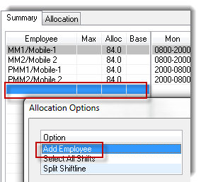
Top of Page
Explanation
In this sample display, run the process in this order:
- click individually into each of the day shifts that you wish to allocate to the employee you've selected in the previous step.
- then, click on the employee
- then, click the "Assign" button. This will link the shifts to the employee.
- if you've made a mistake in terms of allocation, select a shift and press the un-assing button.
- repeat the process of adding an employee, and assigning shifts until you are satisfied that this is the schedule you wish to run.
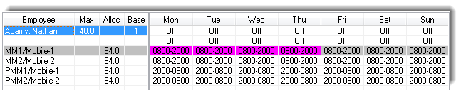
After the above process, your screen may resemble below, the succinct information being that each employee is working a 48 hour week.
You will also notice below the employee names are all the work schedules that have not been assigned to a regular employee. They will still appear on the scheduling workbench, available to the operator to manually assign them.
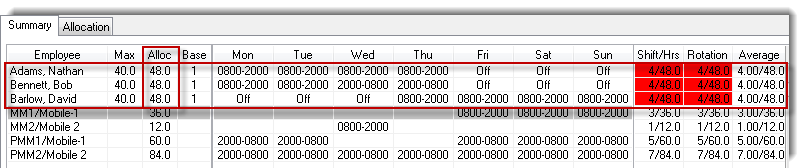
Top of Page
The Weekly Schedules - Scheduling Workbench
The Scheduling Workbench (SWB) is where the day to day management of the roster takes place.
If you were to open the SWB and select City Parking as your site, you will likely get a blank screen - becuase you have not requested the system to "generate" a schedule for you. You have been planning the schedule in the prior two steps.
Press the top button (indicated), which will present you with the "Schedule Generation" screen. This example shows a week beginning Monday (11/10/2010), which is the date that you must use in the Start Date field for the roster generation. Irrespective if your week runs Tue - Wed for payroll etc, the Schedule generation requires its week to commence on Mondays.
Complete the rest of the screen as per the example below, generating two weeks of rosters as you've previously defined in the Standard Schedule.
After entering 2 for the number of weeks to generate, use the drop down in the "Add Standard Scheduling Sites" to select the site(s) for which you wish to regenerate schedules. The system will go away and do its work, returning with a completion message.
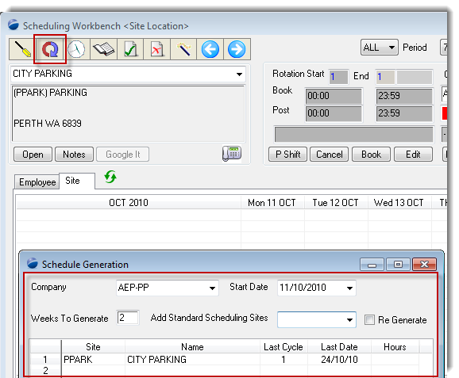
Having generated the two weeks of rosters, refresh the SWB and you may get a display as shown below. We can immediately note that there are no un-filled shifts showing, whereas we know that we did not allocate all the work schedules to regular employees.
To correct the display, select the "Preferences" icon on your PowerForce window, and tick the "Show Un-Allocated Shifts" checkbox.
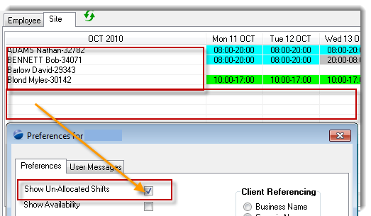
Once you have modified your preferences, again re-display the SWB, which will now show you all of the un-assigned work schedules.
To assign an employee to any of the un-assigned shifts, you may click on the individual shift itself, and then follow the steps below, or you may
- on the left hand side of the display click on one of the work schedules (purple row),
- then the Replace button.
- from the screen provided, select the employee to whom you want to assing all the shifts or just a few.
- as per the example below, check all the boxes by using the "Replace All' button, or check them individually
- press Save to make the assignment
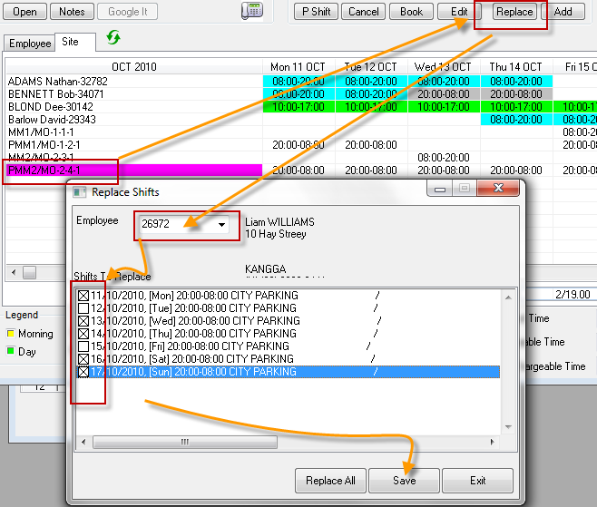
This has completed your manual assignment of employees to those shifts that you've left un-assigned from a regular shift allocation.
Top of Page
Summary
Through the setting of a work schedule you're able to define the coverage requirements for a job, and then using a combination of fixed assignment of employees and the use of casual labour, you define the regular work pattern for your staff. From there on, you forward generate your standard schedules at multiple weeks at a time saving yourself time and effort, and knowing that the schedules are correct.
Top of Page
See Also
 PowerForce Controls PowerForce Controls
SACL worked example
Creating a standard schedule
Top of Page
|